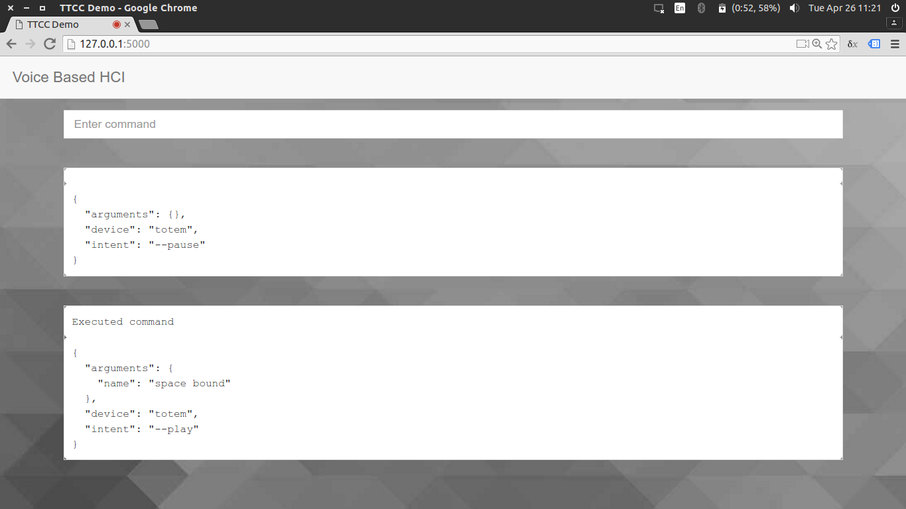
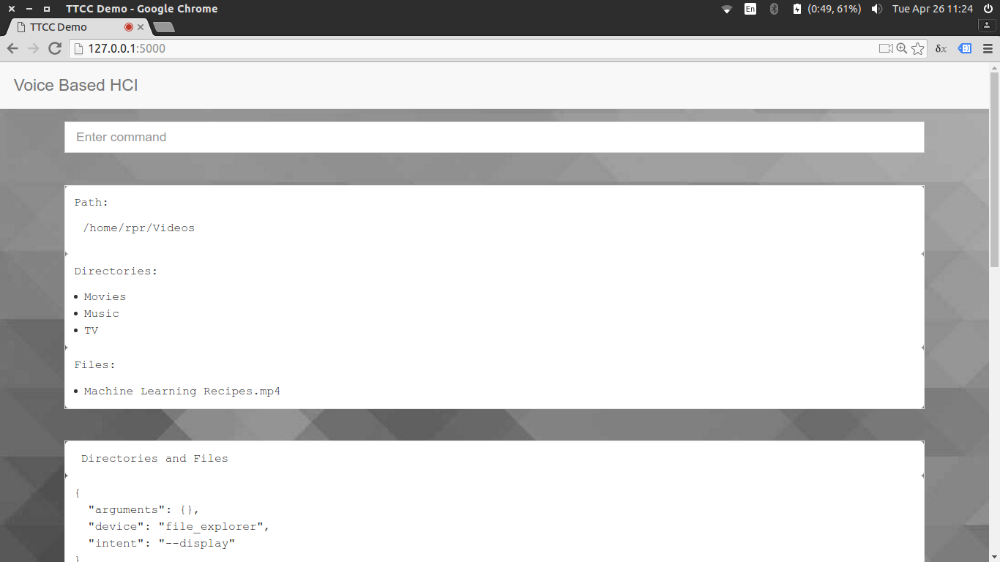
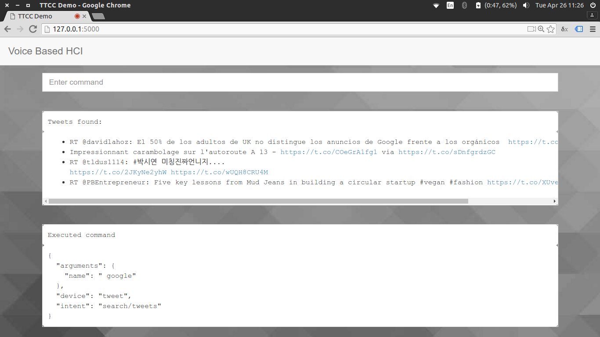

Hierarchical Rule Based Parser to Convert Voice Commands to Text for Human Computer Interaction
Carried out by:
Prashanth R (1RN12IS064)
Rohith P R (1RN12IS077)
Shreyas R (1RN12IS089)
Sushant K (1RN12IS101)
Under the guidance of:
Dr. M V Sudhamani
Professor and Head of Department
Dept. of Information Science and Engineering
RNS Institute of Technology
Agenda
- Abstract
- Introduction
- Literature survey
- Functional and non-functional requirements
- Software and hardware requirements
- System architecture and Sequence diagram
- Modules: Client, Server, Application and Parser
- Testing
- Comparison with a commercial tool
- Screenshots
- Future work and conclusion
Abstract
- Rule based parser for Voice based Human Computer Interaction
- Convert text to actionable data
- High accuracy and minimum setup time
- General Purpose Parser
Introduction
- Human Computer Interaction
- Types of Interfaces
- Command Line Interface
- Menu Driven Interface
- Graphical User Interface
- Voice User Interface
Introduction (continued)
- Predictive Parsing
- Training sets
- Parts of Speech tagging
- Rule Based Parsing
- Linguistic Rules
- Lexicon
Introduction (continued)
- Issues
- Motivation
- General Purpose Parser
Literature Survey
[1] Human-Computer Interaction: Overview on State of the Art by Fakhreddine Karray et. al.
- Contents of the overview
- Existing HCI and recent advances in HCI
[2] The role of voice input for human-machine communication by Philip R. Cohen et. al.
- When speaking to computer is useful
[3] Speech Processing in Java-based PC Speech Commanding Application by Nguyen Chung et. al.
- Speech Recognition
- Development of Java based application
[4] Personalized Speech Recognition for Internet of Things by Mahnoosh Mehrabani et. al.
- Spoken Language Understanding
- Semantic analysis
[5] HiedelTime: High Quality Rule-based Extraction and Normalization of Tempoaral Expressions by Michael Gertz et. al.
- Rule based system using regular expressions
[6] A Rule-Based Approach to Aspect Extraction from Product Reviews by Soujanya Poria et. al.
- Opinion mining using a rule-based approach
- Exploits common-sense knowledge and sentence dependency trees
Non-functional Requirements
- Reliability
- Availability
- Robust
- Scalable
- Usability
- General Purpose
- Testability
Functional Requirements
- Client should capture voice input and have it converted to text
- Server side controller should act as a communication pathway between other modules
- Parser should convert unstructured text to a structured format
- Application handlers must register themselves with the parser
- External interface should display relevant information to the user
Software Requirements
- Operating System: Ubuntu 14.04, Debian 8
- Web Bowser: Google Chrome 49
- Front End: HTML, JavaScript, jQuery
- Back End: Python 3.4, Flask 0.10
- Server: Werkzeug 0.11
Hardware Requirements
- Processor: Intel core 2 duo
- RAM: 2GB
- Hard disk: 10GB
- Internet: Min upload speed of 500 Kbps
- Microphone
Other requirements: Vocabulary
- Reserved (4): start, stop, reset, quit, session
- Applications (11): media player, tweet, forecast
- Intents (65): play, fetch, temperature
- Arguments (6): song, topic, city, directory
- Modifiers (7): in, by, about, to, from, yes, no
System Architecture

Sequence Diagram

Client Side
- Call speech recognition API to convert user's voice input to text
- Look out for reserved keywords
- Sends commands to the server once a session is started
- Responsible for tracking state
- Render output on screen
- Control front end applications based on the parser's output
Implementation - Client Side
- Set language to English and accent to Indian
- Enable continuous recording and disable interim results
- Start listening
- if (isStartSession(command))
set session flag to true
display message indicating that session has started
else if (isStopSession(command))
reset session flag
quit running applications
display message indicating that session has stopped
else
send command to server for parsing
Server Side
- Always active
- Serves HTML pages and other resources
- Stateless
- Pathway between the other components
- Accepts and sends data in JSON format
Implementation - Server Side
- Send HTML, CSS and JavaScript
- Default template of 'output', to be sent to client
- try block Retrieve parsed details from parser
Send command for parsing
if target application is not current application
return
if intent is not provided
set example as available intents
set message as example message
return
Implementation - Server Side
-
if operation requires confirmation
- except block set message to 'Something went wrong'
if response was cancel
return
set message as default intent message
return
else
Retrieve result from application execution handler
return
return
Applications
- Has to be registered with the parser
- Each application has its own interface
- Independent execution handlers
- Can ask for additional information or confirmation
-
Supported applications:
- File explorer: Traverse the file system
- Totem: Play music locally
- SoundCloud: Stream music online
- Weather: Fetch reports from Open Weather
- Twitter: Get latest tweets
Implementation - Applications
- Register applications
- Call totem execution handler
- if intent is play replace alias with 'totem'
- Generate shell command and perform a system call
- return
clean up command
if argument is present in command
traverse through directory tree to find matching filenames
if no matching file found
return
if more than one file found
provide options
return
else
store duration of song
Parser
- Number of rules grows at the rate of O(n)3
- Number of searches grows at the rate of O(n)
- Hierarchically organized collection of regular expressions
- Number of searches grows at the rate of n only
- Declaration of capabilities reduces resource wastage

Registering and Parsing
{
'alias': ['totem', 'video player', 'media player'],
'operations': {
'--play': {
'triggers': [r'play video', r'play songs?', r'play'],
'arguments': {
'name': ['{trigger}(?P<name>( .*)?)((in )?{alias})?'],
}
}
}
}

{
"application": "totem",
"intent": "--play",
"arguments": {
"name": "space bound"
}
}
Testing
| Id | Input | Expected Application | Expected Intent | Actual Application | Actual Intent | Status | |
|---|---|---|---|---|---|---|---|
| 1 | totem play space bound | totem | play | totem | play | ✓ | |
| 2 | get tweets about cricket | tweet | cricket | tweet | cricket | ✓ | |
| 3 | soundcloud list pursuit | soundcloud | list | soundcloud | list | ✓ | |
| 4 | forecast describe weather | forecast | weather | forecast | weather | ✓ | |
| 5 | play forecast in music player | totem | play | forecast | null | ✗ |
Comparison
Command: "play space bound in media player"
| Commercial software | Proposed parser | |||
|---|---|---|---|---|
 |
 |
Screenshots
Confirm before performing critical operations

Provide options in case of conflict

File explorer
Tweets
Future work
- Handle commands that require services of more than one application
- Detect negations
- Add support for multiple arguments of the same type
- Conflicts must be resolved correctly
- Record history to predict missing information
Conclusion
- Rule based parser for Voice based HCI
- Unstructured text to structured usable data
- General Purpose Parser
- Scalable